Now it is time to begin to put the syntax and theory we have covered up to this point in the book to use. Starting from the top of the object hierarchy with Window, we will explore some applications of JavaScript. In this chapter, we will learn how to create a variety of windows, including alerts, confirmations, prompts, and custom pop-up windows of our own design. We will also show how windows and frames are very much related. Finally, we’ll discuss the problematic special cases of window management and how overlays have become a needed tool in the JavaScript developer’s toolbox.
JavaScript’s Window object represents the browser window, or potentially frame, that a document is displayed in. The properties of a particular instance of Window might include its size, amount of chrome—namely the buttons, scroll bars, and so on—in the browser frame, position, and so on. The methods of the Window include the creation and destruction of generic windows and the handling of special-case windows such as alert, confirmation, and prompt dialogs. The Window, at least in the case of browser-based JavaScript, defines the universe, and most everything lives within it. As the topmost object in the JavaScript browser-document object hierarchy, Window contains references to any of the DOM or browser-related objects we have presented to this point, as well as any user-defined global values; thus it seems appropriate to start our discussion of applied JavaScript with it.
As we have discussed numerous times in the book, the Window is not only home to many useful properties, methods, and objects but to the variables and functions that we define in our scripts. For example, if we define a variable likeJavaScript and set it to true,
and we are not within function scope, that variable is global and, as such, becomes a property of the Window object. In other words, if we write code like this:
it is the same as if we were to write this code:
Yet, even more interesting, the alert() method itself is part of the Window, so
is also the same thing.
As we have discussed earlier, we must be quite careful not to collide with other scripts’ global variables. Thus we would tend to use a wrapper object to house our variables, therefore limiting our exposure to the global name space as much as possible:
It turns out that such a scheme of limiting our identifier footprint isn’t just useful to avoid clashing with other included scripts, but to avoid clashing with the properties, methods, and objects of the Window object itself.
Table 12-1 shows the properties, including objects, of the Window object, while Table 12-2 shows its methods. The tables contain data collected primarily from the HTML5 specification; however, they also include proprietary properties and methods that have spread across multiple browsers or are often seen in real-world code bases. These tables should provide a useful roadmap to the Window object.
Table 12-1 window Properties and Objects
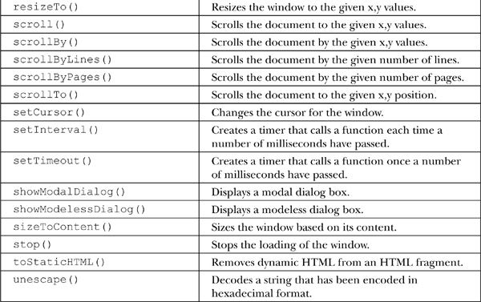
Given the wide range of properties and methods in the Window object, we focus in this chapter on the creation and management of windows. Subsequent chapters will address some of the important objects such as Navigator, Document, Screen, and so on.
We begin our discussion of the application of the Window object by presenting how to create three types of special windows known generically as dialogs. A dialog box, or simply dialog, is a small window in a graphical user interface that “pop ups,” requesting some action from a user. The three types of basic dialogs supported directly by JavaScript include alerts, confirms, and prompts. How these dialogs are natively implemented is somewhat rudimentary, but in the next section we’ll see that once we can create our own windows we can replace these windows with our own.
The Window object’s alert() method creates a special small window with a short string message and an OK button, as shown here:
NOTE The visual representation of an alert dialog can vary widely between browsers and may or may not include an icon and information about what is issuing the alert. The icon may be browser focused or unfortunately may look like a warning, regardless of the meaning of the message being presented.
The basic syntax for alert is
or, for shorthand, we just use
as the Window object can be assumed. The string passed to any dialog such as an alert may be either a variable or the result of an expression. If you pass another form of data, it will be coerced into a string. All of the following examples are valid uses of the alert method:
An alert window is page modal, meaning that it must receive focus and be cleared before the user is allowed to continue activity with the page.
One common use of alert dialogs is debugging messages. While this seems an acceptable use of alerts, it is generally more appropriate to pipe such messages to a browser’s console using the console.log() method. Not only does this keep the message outside the view of the casual user, but often you need to issue many debugging traces, and the alert’s modal nature may be both annoying and inappropriate, depending on what the code is doing.
The confirm() method creates a window that displays a message for a user to respond to by pressing either an OK button to agree with the message or a Cancel button to disagree with the message. A typical rendering is shown here:
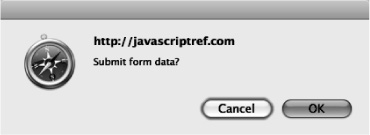
The writing of the confirmation question may influence the usability of the dialog significantly. Many confirmation messages are best answered with a Yes or No button, rather than an OK or a Cancel button, as shown by the following dialog:
Unfortunately, using the basic JavaScript confirmation method, there is no possibility of changing the button strings, so choose your message wisely. Fortunately, later we’ll see it is quite possible to write your own form of confirmation.
The basic syntax of the confirm() method is
or simply

where string is any valid string variable, literal, or expression that either evaluates to or will be coerced into a string that will be used as the confirmation question.
The confirm() method returns a Boolean value, which indicates whether or not the information was confirmed, true if the OK button was pressed, and false if the Cancel button was pressed or the dialog was closed, as some older browsers allow for. The return value can be saved, like so:
or the method call itself can be used within any construct that uses a Boolean expression such as an if statement:
Like the alert() method, confirmation dialogs should be browser modal.
The following example shows how the alert and confirm can be used:
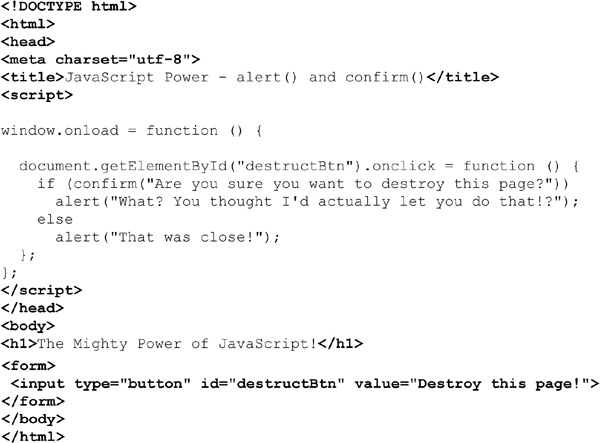
ONLINE http://javascriptref.com/3ed/ch12/alertconfirm.html
A prompt window invoked by the prompt() method of the Window object is a small data collection dialog that prompts the user to enter a short line of data, as shown here:
The prompt() method takes two arguments. The basic syntax is shown here:
The first parameter is a string that displays the prompt value, and the second is a default value to put in the prompt window. The method returns a string value that contains the value entered by the user in the prompt.
The shorthand prompt() is almost always used instead of window.prompt(), and occasionally programmers will accidentally use only a single value in the method:
However, in many browsers you may see that a value of undefined is placed in the prompt line. You should set the second parameter to an empty string to keep this from happening:
When using the prompt() method, it is important to understand what is returned. If the user presses the Cancel button in the dialog or the close box, a value of null will be returned. It is always a good idea to check for this. Otherwise, a string value will be returned. Programmers should be careful to convert prompt values to the appropriate type using parseInt(), parseFloat(), or another type conversion scheme if they do not want a string value.
The following example shows the prompt() method in action:
ONLINE http://javascriptref.com/3ed/ch12/prompt.html
The format of these last three dialogs leaves a little to be desired. We explore a few emerging and proprietary mechanisms before moving on to creating our own windows from scratch.
Internet Explorer introduced a modal window, which was later incorporated into the HTML5 standard. Like a standard dialog, this more generic window is modal to the page and must be dismissed before moving on. The basic syntax for creating a modal dialog is
where
• URL of dialog is a URL of the document to display.
• arguments are any objects or values you wish to pass to the modal dialog.
• features is a semicolon-separated list of display features for the dialog.
The features string should be the same as what is supported by window.open(), which will be covered shortly, though MSDN syntax shows some variations that will likely change as this is standardized.
A simple example of this method is shown here:
The showModalDialog() method also returns a value. To accomplish this, set the window.returnValue property in the dialog and the return of this value will happen automatically. This mechanism allows for the simple creation of user prompt and confirmation dialogs, which must return a value.
The second parameter can be an arbitrary argument. This object is accessible within the dialog with the window.dialogArguments property. Internet Explorer supports some additional dialog properties, including window.dialogWidth, window.
dialogHeight, window.dialogTop, and window.dialogLeft.
Microsoft also introduced a modeless window that is very different from a modal dialog. While both dialog boxes always maintain focus, a modeless window does allow you to focus in the window that created the dialog. A common use for this might be to display help or other very contextual useful information. However, while different in function, a modeless window is syntactically similar to the modal dialog.
The method parameters are the same, but the returned value is not a value created within the dialog. Instead, it’s a reference to the created window in case it is manipulated at a later time. This would be similar, then, to the value returned by window.open(). A simple example of the syntax for creating a modeless window is shown here:
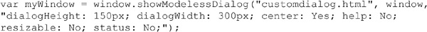
Readers should remember that this syntax is not currently covered under the HTML5 specification.
A special window form supported by Microsoft is a generic form of pop-up window. Creating a pop-up is very simple—just use the window.createPopup(), which takes no arguments and returns a handle to the newly created window:
These windows are initially created but are hidden. They are later revealed using the popup object’s show() method and hidden using hide(), as shown here:
The value of Microsoft’s special pop-ups may not be obvious until you consider that they have more control over their appearance than standard JavaScript dialogs. In fact, initially you could even remove the chrome of the displayed window. Chromeless windows were, however, abused by those looking to phish end-user passwords. Often these windows were used to position over the URL bar or perform other trickery. Today their use is severely limited in Internet Explorer.
A complete example showing the use of all three of these unusual dialog windows is shown here:
ONLINE http://javascriptref.com/3ed/ch12/specialdialogs.html
While the alert(), confirm(), and prompt() methods create specialized windows quickly, it is often desirable to open arbitrary windows to show a Web page or the result of some calculation. The Window object methods open() and close() are used to create and destroy a Window, respectively.
When you open a Window, you can set its URL, name, size, buttons, and other attributes, such as whether or not the window can be resized. The basic syntax of this method is
where
• URL is a URL that indicates the document to load into the window.
• name is the name for the window (which is useful for referencing it later on using the target attribute of HTML links).
• features is a comma-delimited string that lists the features of the window.
• replace is an optional Boolean value (true or false) that indicates whether or not the URL specified should replace the window’s contents. This would apply to a window that was already created.
A simple example of this method is
This would open a window to Google with a height of 300 pixels, a width of 600 pixels, and scroll bars, as shown here:
Of course, because we spawn the window directly, your browser’s pop-up blocker might get in the way. We’ll discuss handling that in a bit, but for now we might want to focus on triggering window creation rather than just having it occur directly. Obviously, there are a variety of ways programmers might trigger the creation of windows, but most often links or buttons are used, as shown here:
ONLINE http://www.javascriptref.com/3ed/ch12/windowopentrigger.html
One useful feature from the dialogs in the previous section was the ability to send arguments to the new dialog box. This is not possible with window. open(), as window . open() does not receive an arguments parameter. However, window.openDialog() functions mostly the same as window.open(), with the exception that it has the ability to send arguments. The arguments would come after the features parameter, and there is no limit to the number of arguments that can be passed. The arguments can be accessed within the new window with the window.arguments property.
Once a window is open, the close() method can be used to close it. For example, the following fragment presents buttons to open and close a window. Make sure to notice the use of the secondWindow variable that contains the instance of the Window object created:
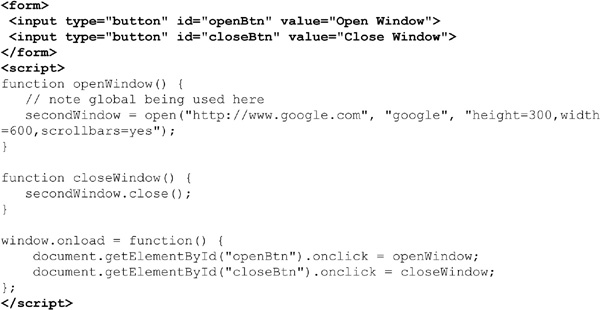
First, we notice that the variable secondWindow is in the global scope. Certainly not the best way to code, but we must have a reference to the created window in order to run the close() method. Obviously, a better solution would be to use some wrapper object to house any global references we need, like so:
Next, we should address the usage of the close() method, which is rather dangerous. If the new window does not yet exist, the script will throw an error. Reload the previous example and press the Close button immediately, and you should get an error. In order to safely close a Window, you first need to look for the object and then try to close it. Consider the following if statement that looks to see if the JSREF.secondWindow value is defined before looking at it; then it will look at the closed property to make sure it is not already closed:
Notice that this previous example actually specifically relies on short-circuit evaluation, because if the value in JSREF.secondWindow is undefined, then trying to look at its closed property would throw an error. The following short example shows the safe use of the Window methods and properties discussed so far:
ONLINE http://www.javascriptref.com/3ed/ch12/windowclose.html
TIP If you create a window within an HTML tag’s event handler attribute, remember that the variable scope will not be known outside of that tag. If you want to control a window, very likely you will need to define it in the global scope.
Besides checking for the existence of windows before closing, be aware that you cannot close windows that you have not created, particularly if security privileges have not been granted to the script. In fact, you may even have a hard time closing the main browser window. For example, if you have a statement such as window.close() in the main browser window running the script, it may be denied—some older browsers may prompt you to confirm and others will close the window down without warning.
When creating new windows within window.open(), there are a number of possibilities for the feature parameter, which is quite rich and allows you to set the height, width, scroll bars, and a variety of other window characteristics. The possible values for this parameter are detailed in Table 12-3.
Table 12-3 Feature Parameter Values for window.open()

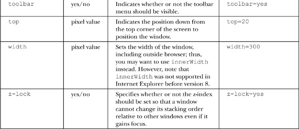
NOTE Typically, in modern JavaScript implementations, you can use 1 for yes and 0 for no for the features using yes/no values. However, for safety and backward compatibility, the yes/no syntax is preferred.
Oftentimes when using the open() method, you may want to create strings to hold the options rather than use a string literal. However, when the features are specified, remember that they should be set one at a time with comma separators and no extra spaces. For example,
The next example is useful for experimenting with all the various window features that can be set. It also will display the JavaScript string required to create a particular window in a text area so it can be used in a script.
NOTE In addition to the height and width properties, in Firefox it is possible to set the size of the window through the window.sizeToContent() method, which will set the size of the window to fit the content rendered.
ONLINE http://javascriptref.com/3ed/ch12/windowopen.html
A rendering of the previous example is shown in Figure 12-1.
Figure 12-1 Rendering of window. open() example
Sadly, if you try the previous example, you will find that many features no longer work. For example, the stacking properties, such as alwaysLowered, alwaysRaised, and z-lock, likely will not work due to security abuses. You will find also that it is impossible to size windows smaller than say 50 × 50 pixels for similar reasons. You can’t even hide the location, as it will always show up in most browsers. Modifying the menu bars is just as problematic. We’ll see that, given these spotty issues, custom windows are fading into the past in Web development. Some changes to the HTML5 specification, though, do give us hope that the situation may be rectified someday.
HTML5 introduces a standard way to understand what chrome elements such as menus may be showing on the main window or any spawned window. A number of BarProp objects exist, including the following:
Each of these objects corresponds to the similarly named browser menu. The object currently contains a single property called visible that indicates whether or not the menu is showing. When a script is executing in a privileged mode, it may be possible to set this value for control, but at this point it certainly is not allowed outside of that. A simple example of this emerging aspect of Window is shown here, and readers are encouraged to explore these objects further, as they are likely to be expanded on:
ONLINE http://javascriptref.com/3ed/ch12/barprop.html
The reality of windows in browsers is less than clean. Adding content to newly created windows can be a chore, depending on how it is done, and sloppy mistakes can cause trouble. Security concerns abound for the size and position of windows, and pop-up blockers can cause lots of trouble. In fact, for many JavaScript developers, subwindows have long since been abandoned for pseudo-windows in the form of <div>–based overlays.
When opening a new window, it is quite easy to populate it if you have an existing document at some URL:
However, if you need to create a window directly, there are a number of ways it can be done. First, you might fall to traditional document.write() use, like so:
Notice a few points here. First, the use of document.close(). Without this statement, some browsers will assume there is more content coming, so the window will appear never to finish loading, while others will close implicitly. Given this variability, it is quite important to have this method call. Second, notice the use of document.writeln(). If we are looking to build clean-looking HTML source, this inserts newlines. However, unless we expect people to view the source of a spawned window with a debugging tool, this is kind of pointless. We certainly could use document.write() and add in \n characters if we wish:
Of course, even having a multitude of document.write() statements seems wrong, and indeed it is, as it may cause performance concerns. Instead, we may gather content for output in a string variable and output it at once:
You may opt to perform DOM calls to create the elements, but this seems to us to be an exercise in lots of code for little value. If you must go that route, you could instead employ the innerHTML property, like so:
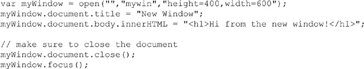
Notice that we don’t construct all the pieces of the document. We certainly could have, but the browser will scaffold a base tree for us anyway.
We do not use document.write() after a window is created unless we desire to wipe the entire page clean. Instead, we reply on DOM methods to insert and change the HTML in the new document at will. The only difference is that now you must make sure to use the new window’s name when accessing a DOM method or property. For example, if you had a window called newWindow, you would use statements such as the following to retrieve a particular element in the other window:
The following simple example shows how information entered in one window can be used to create an element in another window:
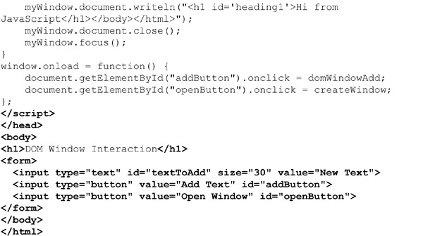
ONLINE http://javascriptref.com/3ed/ch12/windowadd.html
Creating a window that fills up the screen and even removes browser chrome is possible in many browsers. It has long been possible to figure out the current screen size by consulting window.screen properties and then create a new window that fits most or all of the available area. The script fragment presented here should work to fill up the screen in all modern browsers:
The previous “poor man’s” script does keep the browser chrome and may not quite fill up the window. Under Internet Explorer and potentially other browsers, it may be possible to go into a full-screen mode more directly, using a feature string value, like so:
ONLINE http://javascriptref.com/3ed/ch12/fullscreen.html
Some archaic browsers needed a more complicated script and even prompted the user if a security privilege should be granted to go full screen. The fact that older browsers warned users before going full screen is quite telling, especially once you consider that some users will not know how to get out of full-screen mode. The key combination ALT+F4 should do the trick on a Windows system. However, users may not know this, so you should provide a Close button or instructions for how to get out of full-screen mode.
Firefox offers a window.fullScreen property that holds a Boolean indicating whether or not the window is in full-screen mode.
Even things that should be easy with JavaScript windows are not that easy. For example, if we try to center a spawned Window, we might be tempted to center it to the screen. That is fairly straightforward if we consult the screen dimensions found in the Screen object:
However, you are more likely to want to center a spawned window in relation to the spawning Window. This becomes a bit trickier because of the way the inner and outer browser Window dimensions are calculated and because of the variation in a browser’s toolbar and button heights. The following example shows roughly what you would do:
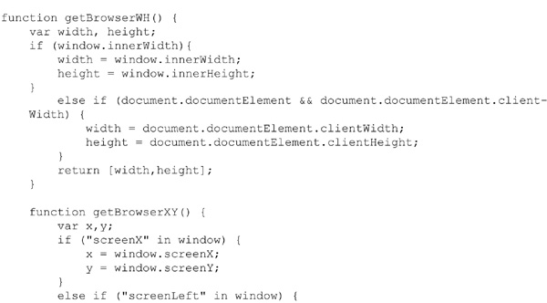
ONLINE http://javascriptref.com/3ed/ch12/windowcenter.html
It seems that the more you try to make spawned windows work, the more trouble you discover. We save the final straw before presenting the “solution” most developers adopt.
The most significant drawback to spawned windows is that many browsers may kill their load because of the abuse of so-called pop-ups online for advertising and other purposes. Generally, if a window is created on page load, timer, or without some user-initiated action, the browser will try to block it, as shown here:
Obviously, if you are counting on a window being raised for some custom dialog or important functionality, a pop-up blocker can be quite troublesome. This leads developers to question whether a pop-up blocked can be detected. The answer, unfortunately, is “sometimes.” The general method to pop-up blocking detection is to try to open a pop-up window on load and then see if it exists or if it has the closed property set to true. Note that even pop-up blockers allow pop-ups when there is user interaction, so the test must be done without the input from the user.
Unfortunately, this isn’t a perfect solution. Browsers vary in how they address pop-ups. For example, Chrome opens the window and hides it, so this test fails for Chrome. The accepted method in Chrome is to wait a little bit and then check the innerWidth. If it is blocked, it will be 0. You do have to wait a bit because right on pop-up load the innerWidth is still set to 0, even when pop-ups are allowed. In addition, if the user manually allows the pop-up, it likely will not be detected properly, as the detection code will run before the pop-up is launched. Other issues will likely emerge as time passes. A simple example showing this less-than-optimal detection scheme is given here:

ONLINE http://javascriptref.com/3ed/ch12/popupdetector.html
Besides all the browser quirks, the pop-up detection scheme is quite imperfect because we can see the detection window. There are just too many problems with spawned windows because of past abuse, so many developers have left them in favor of CSS-based overlays.
Unfortunately, as we have seen, simple dialogs such as alert() and prompt() lack customization. You may opt to try to create custom dialogs using the generic window.open() method. However, in either case, the dialogs may be blocked by browser-based or third-party pop-up blockers installed by the user. To address both the customization concerns and pop-up blockers, many designers have turned to what we dub “div dialogs,” named for the HTML <div> tag used to create them. Using CSS, designers can position <div> tag–based regions over content and customize them visually in whatever manner they like.
The creation of a div dialog follows standard DOM tag-building code. First, the <div> tag that would be used as the custom dialog would be created and positioned:
Then the various elements would be added to the dialog, typically one at a time, unless you resort to using the innerHTML property:
We show only a snippet here because it gets quite lengthy as the messages and various controls to dismiss the dialog are added, and the repetitious code adds little to the discussion. Once performed, though, the procedure can be abstracted into a custom function such as createDialog(), where you could indicate the type of dialog, message, and style needed.
After all of the various elements have been added to the dialog, the region is displayed at the desired page position. However, there is one important consideration we need to mention before pointing readers to the complete example online: the issue of modality. Normally, alert() and confirm() dialogs are application modal, meaning that the user must address them before moving on to another browser-based activity. To simulate modality, we create a translucent region that covers the browser window or region we want to be model to. To do this first, create a <div> tag to serve as the modality overlay:
Now, make sure the appropriate CSS is applied to make the overlay translucent and covering the region to shield from user activity. The class name set in the preceding function does this and is shown here as reference:
Finally, append it in the document along with the dialog, as shown here:
A simple example demonstrating simple <div>–based dialogs is shown here and previewed in Figure 12-2:
Figure 12-2 Overlay in action
ONLINE http://javascriptref.com/3ed/ch12/overlay.html
Note that our aim in this section is not to provide a complete solution with different dialog types, return values, styles, and the like. This would be best suited for a library. Our intention here is to show the technique only.
As we have seen so far, it is easy enough to open and close windows as well as write content to them. There are numerous other ways to control windows.
It is possible to bring a window to focus using the window.focus() method. This should raise the window for access. Conversely, it is also possible to do the opposite using the window.blur() method.
NOTE There may be security considerations in Internet Explorer that may cause a window not to respect a focus() invocation. Test your browser or consult the Microsoft Developer Network (MSDN) for the latest information, as it changes between versions of Internet Explorer.
Some methods of window control address common browser functions. For example, if a window is taking a long time to load, an end user may hit the Stop button. This can be accomplished programmatically with the window.stop() method.
The HTML5 specification standardizes window.print(), which has long been supported by browsers. Firing this method should raise a dialog first, like so:
Some browsers implement the nonstandard window.find() method. The syntax of this method is historically written to be
window.find(targetstring, casesensitivity, backwards, wraparound, wholeword, searchinframes, showdialog)
where
• targetstring is the string to find.
• casesensivity is a Boolean value that, if true, indicates that the search should be performed with case sensitivity.
• backwards is a Boolean value that, if true, indicates that the search should proceed backward rather than forward.
• wraparound is a Boolean value that, if true, indicates that the search should wrap to the top of the document once the bottom is hit.
• wholeword is a Boolean value that, if true, indicates that the search should only match whole words.
• searchinframes is a Boolean value that, if true, indicates that the contents of frames within the window should be searched.
• showdialog is a Boolean value that, if true, shows the browser’s search dialog.
The reality is that, generally, this isn’t the case. However, some browsers will support a simple invocation of window.find() to pop the browser’s find command, as shown here:
Given the eventual coverage of printing, this actually doesn’t seem a long shot to be eventually codified and more widely supported, though admittedly that is still speculation at this point.
NOTE There are a few other possibilities for browser-related window actions such as adding bookmarks or even trying to programmatically set the home page. However, these are not only nonstandard but also poorly supported.
Moving windows around the screen is possible using two different methods, window.moveBy() and window.moveTo(). The moveBy() method moves a window a specified number of pixels and has a syntax of
where
• windowname is the name of the window to move or is called just Window if it is the main window.
• horizontalpixels is the number of horizontal pixels to move the Window, where positive numbers move the window to the right and negative numbers to the left.
• verticalpixels is the number of vertical pixels to move the Window, where positive numbers move the window down and negative numbers up.
For example, given that a window called myWindow exists, the following would move the window down 100 pixels and to the right 100 pixels:
If you have a particular position in the screen to move a window to, it is probably better to use the window.moveTo() method, which will move a window to a particular x,y coordinate on the screen. The syntax of this method is
where
• windowname is the name of the window to move or is called Windowif it is the main window.
• x-coord is the screen coordinate on the x-axis to move the window to.
• y-coord is the screen coordinate on the y-axis to move the window to.
So given that the window called myWindow is on the screen, the following would move the window to the origin of the screen:
In JavaScript, the methods for resizing windows are very similar to the ones for moving them. The method window.resizeBy(horizontal, vertical) resizes a window by the values given in horizontal and vertical. Negative values make the Windowsmaller, while positive values make it bigger, as shown in the examples here:
Similar to the moveTo() method, window.resizeTo(width, height) resizes the window to the specified width and height indicated:
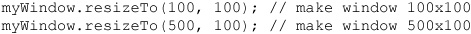
NOTE In modern JavaScript implementations, it is not possible to resize browser windows to a very small size, say 1 × 1 pixels. This could be construed as a security hazard, as a user may not notice such a minuscule window spawned by a site after leaving it.
Similar to resizing and moving, the Window object supports the scrollBy() and scrollTo() methods to correspondingly scroll a window by a certain number of pixels or to a particular pixel location. The following simple examples illustrate how these methods might be used on some window called myWindow:
NOTE The method scroll() may occasionally be encountered. While the syntax of scroll() is identical to scrollBy(), the method is nonstandard and should be avoided. In addition, scrollByLines(lines) and scrollByPages(pages) are two similar methods supported only by Firefox. The same effect can be achieved with scrollBy(), so again we recommend using only scrollBy().
In addition to scrolling the Window, it is often desirable to see where the browser has been scrolled to. Different actions may occur, depending on where the user is on the page. However, finding the scroll location is quite different depending on the browser. The most obvious properties to look at would be scrollX and scrollY. However, these properties are not supported by Opera and Internet Explorer. The pageXOffset and pageYOffset properties are now supported in all major browsers, including Internet Explorer from version 9. In order to get the scroll position before version 9, it is necessary to look at the document.documentElement.scrollLeft and document.documentElement.scrollTop properties:
A complete example presented here can be used to experiment with the various common Window methods that we have discussed here:
ONLINE http://javascriptref.com/3ed/ch12/windowmethods.html
An example rendering of the previous example is shown in Figure 12-3.
Figure 12-3 Controlling standard spawned windows
It is often desirable to set a window to a particular URL. There are numerous ways to do this in JavaScript, but the best way is to use the Location object, which is a property of Window. The Location object is used to access the current location (the URL) of the window. The Location object can be both read and replaced, so it is possible to update the location of a page through scripting. The following example shows how a simple button click can cause a page to load:
Rather than direct assignment, you can use the assign() method as well.
NOTE Internet Explorer defined the nonstandard window.navigate(URL), which will load the specified URL parameter, similar to setting the location value. This is a nonstandard method that should be avoided, though it is also supported in some other browsers, notably Opera.
Regardless of the method used to change the URL, the new location will be added to the browser history. If you desire to replace the current page in history, use the replace() method:
If you just want to refresh the page without setting the URL, you may use the reload() method:
A complete list of the methods is shown in Table 12-4.
It is also possible to access parsed pieces of the Location object to see where a user is at a particular moment. A few examples are shown here:
The properties of the Location object are pretty straightforward for anyone who understands a URL. A complete list of these properties can be found in Table 12-5.
Table 12-5 Common Properties of the Location Object
One property that bears some attention is search. This property contains the query string, and very likely you will want to break it up into its constituent name-value pairs. Some simple string manipulations will do the trick:
Finally, an emerging method called resolveURL() is specified under HTML5. This method returns the absolute path of a relative URL passed in. For example,
would show a dialog with the URL http://javascriptref.com/index.html.
NOTE No browser has implemented this method at the time of this edition’s writing.
To conclude the section, we present an example demonstrating the various properties and methods of the Location object:
ONLINE http://javascriptref.com/3ed/ch12/location.html
One aspect of URLs that deserves a mention is the hash portion that specifies the fragment identifier of the page. Reading the value is obviously quite easy.
Setting the hash is just as easy.
Obviously, this will change the hash, but notice that the Web browser does not refresh while the hash value typically creates an entry in the browser’s history.
NOTE In some older browsers, hash changes were not handled properly when screen refreshes did not happen; the history was not actually affected, which defeats the purpose of “fixing” the back button action.
The nonrefreshing behavior of the fragment identifier URL is quite useful, as it allowed Web developers building Ajax and Flash applications to push a change to the URL for history and bookmark management without a page reload. HTML5 codifies this action by adding an onhashchange event to easily signal the potential change of state. An example of this is demonstrated here:

A more appropriate way to handle statement management is provided by HTML5 with the pushstate() and replacestate() methods of the History object, which are discussed next.
When users press their browser’s Back or Forward button, they are navigating the browser’s history list. JavaScript provides the History object as a way to access the history list for a particular browser window. The History object is a read-only array of URL strings that show where the user has been recently. The main methods allow forward and backward progress through the history, as shown here:
NOTE You should be careful when trying to simulate the Back button with JavaScript, as it may confuse users who expect links in a page labeled “Back” not to act like the browser’s Back button.
It is also possible to access a particular item in the history list relative to the current position using the history.go() method. Using a negative value moves to a history item previous to the current location, while a positive number moves forward in the history list. For example:
Given that it is possible to read the length of the history[] array using the history.length property, you could easily move to the end of the list using the following:
Direct access to the URL elements in the history is not possible with JavaScript; in the past, however, unscrupulous individuals have shown that calculated guesses of URLs in conjunction with the rendered styles of visited links can reveal past browsing habits. A simple example of a less nefarious use of the History object can be found online.
ONLINE http://www.javascriptref.com/3ed/ch12/history.html
The rise of Web applications and Ajax require much more programmer intervention in history management than in the past. On the Web, traditionally each unique URL represented a unique page or state of the Web application. However, in an Ajax-style application, often this is not the case. In order not to break the Back button and other Web semantics such as bookmarking, ingenious developers discovered that they could use the hash value to indicate a state change because it did not cause a browse screen refresh. The HTML5 specification attempts to ease this transition with the introduction of the window. pushState() and window.replaceState() methods.
The syntax of the pushState() method is
where
• stateObject is a JSON structure containing the information to save.
• title is the title for the browser’s title bar and/or history list.
• URL is the URL to display in the browser’s location, though there is not a network load related to this, so the URL can be arbitrary.
When pushState() is called, it changes the browser’s URL to the passed-in URL. This will not necessarily be related to a network load; however, the newly set URL will be used in the Location object as will the Referer header on network requests. After being set, a future use of the browser’s Back or Forward button will fire the window.onpopstate event and will receive the saved state object.
The syntax of the replaceState() method is pretty much the same:
The only difference is that the stateObject replaces the current history item rather than making a new one. An example that can be used to explore these methods is shown here:
ONLINE http://javascriptref.com/3ed/ch12/pushreplacestate.html
NOTE Browsers may save state values to the user’s disk so they can be restored after the user restarts the browser. Because of this, there may be a size limit to the JSON representation of the user’s state. For example, in the case of Firefox this limit is currently 640K characters. Saving state information beyond this would require the use of another mechanism such as sessionStorage or localStorage.
The status bar is the small text area in the lower-left corner of a browser window where messages are typically displayed, indicating download progress or other browser status items. Traditionally, it was possible to control the contents of this region with JavaScript. Many developers used this region to display short messages or even scrolling regions. The benefit of providing information in the status bar is debatable, particularly when you consider the fact that manipulating this region often prevents default browser status information from being displayed—information which many users rely on.
Today the use of the status bar is quite limited, as many browsers simply do not show the status region anymore. In some browsers, it does not appear possible even to turn it on anymore. Even when the status bar can be seen, because of past abuse by phishers looking to trick end users, manipulation of the status bar via JavaScript is generally disallowed. As an example, note the advanced settings defaults for JavaScript in a recent version of Firefox showing this to be restricted:
The status bar can be accessed through two properties of the Window object: status and defaultStatus. The difference between these two properties is in how long the message is displayed. The value of defaultStatus is displayed any time nothing else is going on in a browser window. The status value, on the other hand, is transient and is displayed only for a short period as an event (such as a mouse movement) happens. The simple example here exercises both properties:
ONLINE http://www.javascriptref.com/3ed/ch12/status.html
When trying the example, quite likely you may not see the status bar at all. Some browsers will return the values you set, but it will serve little practical purpose. Others will do nothing. Sadly, the status bar is but one example of a surgical removal of features in browsers to solve security or improve perceived usability. This implies that scripts may work for some time before “rusting” away, as browser changes remove their value, so developers should aim to be aware of evolution of platforms, as it can affect their code.
The Window object supports methods for setting timers that we might use to perform a variety of functions. These methods include setTimeout() and clearTimeout(). The basic idea is to set a timeout to trigger a piece of script to occur at a particular time in the future. The common syntax is
where
• script-to-execute is a string holding a function call or other JavaScript statement.
• time-in-milliseconds is the time to wait before executing the specified script fragment.
time-in-milliseconds has different minimum values depending on the browser, the method, and even the window’s active/inactive status. Notice that the setTimeout() method returns a handle to the timer that we may save in a variable, as specified by timerId. We might then clear the timeout (cancel execution of the function) later on using clearTimeout(timerId). The following example shows how to set and clear a timed event:
ONLINE http://javascriptref.com/3ed/ch12/settimeout.html
The setInterval() and clearInterval() methods should be used when a timed event occurs at a regular interval. Here is an example of the syntax of an interval:
This example sets an alert that will fire every two seconds. To clear the interval, you would use a similar method as a timeout:
Now, quite often you will want to execute more than a bit of code in a timer or interval, and either method does allow you to pass in a function as you would with setting an event handler. This means that you can pass simply the function name, as shown here:
In all browsers besides Internet Explorer, after the delay you can also pass parameters to pass to the later invoked function:
Likely you are not going to pass the parameters in this manner, as Internet Explorer browsers don’t support it. Instead, we might pass parameters with a closure:
Of course, like any closure, we need to make sure we are careful that we get the value we want. For example, as with all closures, be careful inside of loops because the parameter will change as the loop goes on. The following example illustrates all of these points:
ONLINE http://javascriptref.com/3ed/ch12/settimeoutparams.html
There is some concern about how accurate and fast timers are. A number of developers have noted that when setting timeouts to 0 ms, the effect rate of the timeout can vary by many milliseconds, though it does generally enforce the timed event to be the next action taken. Timing accuracy certainly is not guaranteed, even if order is preserved. It is interesting to note at this edition’s writing the inclusion in Gecko-based browsers of an extra parameter that indicates the “lateness” of the timeout in milliseconds. Likely, this is a portend of things to come, and we expect more emphasis on timing details as developers continue to push JavaScript to more time-sensitive tasks.
The Window object supports many events. The HTML5 specification attempts to clear up the cross-browser nightmare. Traditionally, most developers stuck with the obviously safe cross-browser window events such as onblur, onerror, onfocus, onload, onunload, onresize, and so on. However, as shown in Table 12-6, there are many more events available than those useful few.
Table 12-6 window Events under HTML5

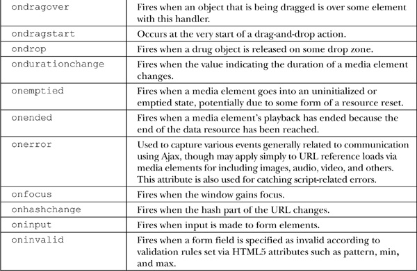
Adding window events handlers can be set through HTML event attributes on the <body> element, like so:
or more registering events can be set through the Window object:
Chapter 11 has full details on event handling, in case you are wondering how to bind or test anything.
As time marches on, browser vendors continue to add numerous events to the Window object. A list of those known at this edition’s publication is detailed in Table 12-7. Check your browser documentation for any others that may have been added since then.
Table 12-7 Selected Proprietary window Events
For applications that have multiple windows launched, it is especially important to understand the basics of communicating among windows. Normally, we access the methods and properties of the primary window using the object instance named simply window, or more likely we just omit the reference. However, if we want to access another Window, we need to use the name of that window. For example, given a window named “myWindow,” we could access its document object as mywindow.document, and thus we could run any method such as writing to the document:
or accessing it with standard DOM methods:
The key to communicating between windows is knowing the name of the window and then using that name in place of the generic object reference window. Of course, there is the important question of how you reference the main window from a created window. The primary way is using the window.opener property that references the Window object that created the current window. The simple example here shows how one window creates another and how each is capable of modifying the other’s DOM tree, as well as reading script variables:
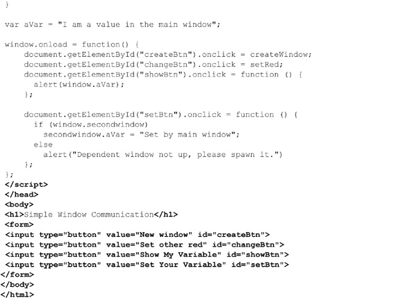
ONLINE http://javascriptref.com/3ed/ch12/simplewindowcommunication.html
Now, one limitation of this traditional communication method is that it requires that the communicating windows be spawned by the same origin; thus it is not at all possible to talk to windows from other domains. HTML5 introduces new facilities that should allow for a much more flexible message passing system.
HTML5 expands on the idea of passing data between windows with the postMessage() method. The syntax of this method is
where
• message is the message to pass.
• targetOrigin is the domain to which the target window must belong.
While you can use wildcards such as “*” to allow any origin, this is not recommended.
Next, you can listen for incoming messages in windows by setting up a handler for window.onmessage. The event object sent to the event handling function will contain a data, origin, and source property where data is the actual message received, origin is the domain the message came from, and source is a reference to the Window object that sent the message.
Once again, as there are security concerns communicating between domains, we should check the origin and source carefully. A simple example passing data between two domains held by one of the authors is shown here. The first page is the page sending the message and the second page is the page receiving the message and replying:
ONLINE http://javascriptref.com/3ed/ch12/postMessageCrossDomain.html
ONLINE http://htmlref.com/examples/childMessage.html
Figure 12-4 shows the parent page receiving calculations from the child.
Figure 12-4 Message passing in action
The postmessage() passing scheme obviously requires a modern browser, but it suggests a very elegant way to have windows communicate. We wrap up the chapter with a return to the past, while also addressing the relationship between windows and frames.
A common misunderstanding among Web developers is the relationship between frames and windows. In reality, both from the perspective of XHTML and JavaScript, each frame shown onscreen is a window that can be manipulated. In fact, when a browser window contains multiple frames, it is possible to access each of the separate Windowobjects through window.frames[], which is an array of the individual frames in the window. The basic properties useful for manipulating frames are detailed in Table 12-8.
Table 12-8 Common WindowProperties Related to Frames
The major challenge using frames and JavaScript is to keep the names and relationships between frames clear so that references between frames are formed correctly. Consider you have a document called “frames.html” with the following markup:
NOTE Notice that the DOCTYPE statement here is different: HTML5 does not support traditional frames, just inline frames. Where required, we use the HTML4 frameset DOCTYPE for clean validation.
In this case, the window containing this document is considered the parent of the three frames (frame1, frame2, and frame5). While you might expect to use a value such as
you probably will actually run the script from within a child frame to determine the number of frames in the window. Thus, you would actually use

or just
The parent property allows a window to determine the parent window. We could also use the top property that provides us a handle to the top window that contains all others. This would be written top.frames.length. You do need to be careful, though, because unless you have nested frames, the parent and top may actually be one and the same. In addition, it is possible to access the hosting Frame object with the window. frameElement property.
NOTE Firefox also offers the content property. This returns the topmost window. As it is only supported in Firefox, top is the recommended property.
To access a particular frame, we can use both its name as well as its position in the array, so the following would print out the name of the first frame, which in our case is “frame1”:
We could also access the frame from another child frame using parent.frame1, or even parent.frames[“frame1”], using the associate array aspect of an object collection. Remember that a frame contains a window, so once you have this you can then use all of the Window and Document methods on what the frame contains.
The next example shows the idea of frame names and the way they are related to each other. There are three files that are required for this example—two framesets (frames.html and moreframes.html) and a document (framerelationship.html) that contains a script that prints out the self, parent, and top relationships of frames.
The first frameset file, frames.html, is listed here:

The second frameset file, moreframes.html, is listed here:
The document, framerelationship.html, is listed here:
ONLINE http://javascriptref.com/3ed/ch12/frames.html
The relationships using these example files are shown in Figure 12-5.
Figure 12-5 Frame relationships
Once you understand the relationships between frames, you will find it much easier to assign variables to particular frames within deeper pages rather than using the parent.frames[] array all the time. For example, given a simple frameset such as this:
you might set a variable to reference the content frame within the navigation Window, like so:

This way, you could just reference things by contentFrame rather than the long array path.
One variation of frames that deserves special attention is the <iframe>, or inline frame, because it is preserved under HTML5. The idea with an inline frame is that you can add a frame directly into a document without using a frameset. For example, this example
produces a page something like this:
ONLINE http://javascriptref.com/3ed/ch12/iframe.html
This then begs the question, “How do we control this type of frame?” In reality, it is much easier since it is within the frames[] array of the current window. Furthermore, if named, you can use DOM methods such as getElementById() to access the object. The simple example here demonstrates this idea:
While inline frames seem to be a simplification of standard frames, they are far more interesting than these examples suggest. In fact, we’ll see in Chapter 15 that <iframe> tags serve as a non-Ajax method for JavaScript to communicate with a Web server. For now, though, we put off this advanced application and study some more common JavaScript frame applications.
Now that we are familiar with frame naming conventions, it is time to do something with them. In this section, we present some solutions for common frame problems and hint at the larger issues with frame usage.
A common question developers have with HTML is how to load multiple frames with a link. XHTML provides the target attribute to target a single frame, such as framename, like so:
However, how would you target two or more frames with a single link click? The answer, of course, is by using JavaScript. Consider the frameset here:
In this case, we want a link in the navigation.html file to load two windows at once. We could write a simple set of JavaScript statements to do this, like so:
This approach can get somewhat unwieldy, so you might instead want to write a function called loadFrames() to do the work. You might even consider using a generic function that takes two arrays—one with frames and one with URL targets—and loads each one by one, as demonstrated here:
While frames can be very useful for building some complex user interfaces and comparing documents, they also can cause Web designers significant problems. For example, some sites will put frames around all outbound links and “capture” the browsing session. Often, site designers will employ a technique called “frame busting” to destroy any enclosing frameset their page may be enclosed within. This is very easy using the following script that sets the topmost frame’s current location to the value of the page that should not be framed:
The converse problem to the one solved by frame busting would be to avoid having framed windows displayed outside of their framing context. This occasionally happens when users bookmark a piece of a frameset or launch a link from a frameset into a new window. The basic idea would be to have all framed documents make sure they are inside of frames by looking at each window’s location object, and if they are not, to dynamically rebuild the frameset document. For example, given a simple two-frame layout such as in a file called frameset.html:
You might be worried that a user could bookmark or directly enter the navigation.html or content.html URL. To rebuild the frameset in navigation.html and content.html, you might have
which would detect if the page was outside its frameset and rebuild it. Of course, this is a very simplistic example, but it gives the basic idea of frame building. The script can be expanded and a variety of tricks employed to preserve the state of the navigation and content pages.
All the efforts made in the last few sections reveal that frames really do have their downsides. While they may provide for stable user interfaces, they are not terribly bookmarking friendly, more than occasionally have printing problems, and not well handled by search engines. As we demonstrated, you can certainly use JavaScript to solve the problems with frames, but it might be better simply to avoid using them in many cases. Before concluding our discussion of frames, let’s take a final look at interwindow communication for state management using frames and JavaScript.
One aspect of frames that some developers found useful early on with JavaScript was the ability to save variable state across multiple page views. As we saw with windows previously, it is possible to access the variable space of one window from another Window, and the same holds for frames. Using a special type of frameset where a small frame that is hard for a user to notice is used, we can create a space to hold variables across page loads. Consider for example, the frameset in the file stateframes.html shown here:
In this case, we have a very small frame called stateframe that will be used to save variables across page loads. The contents of stateframe.html, mainframe.html, and mainframe2.html are shown here. Notice how, by referencing the parent frame, we are able to access the hidden frame’s variable username on any page.
The stateframe.html file is shown here:
The mainframe.html file is shown here:
The mainframe2.html file is shown here:
ONLINE http://javascriptref.com/3ed/ch12/stateframes.html
Obviously, as compared to pushstate() methods and other more modern features, the use of simple interwindow communications with frames to maintain state is a bit primitive. However, we’ll see that in nearly any case, the security implications of all of these client-side state preservation mechanisms leaves a bit to be desired. Given the hostile nature of the Internet, programmers are strongly encouraged to rely on traditional state management mechanisms such as cookies to maintain state between pages in a site. More information on state management can be found in Chapter 16.
The Windowobject is probably the most important object in JavaScript beyond the Document object itself. Using this object, you can create and destroy general windows, as well as a variety of special-purpose windows such as dialog boxes. It is also possible to manipulate the characteristics of windows using JavaScript and even have windows control each other. The key to this is correct naming, because once the window in question is found it can be manipulated with any of the common Document methods. Frames were shown to be a special form of the Window object, and their correct usage was also very much related to their name. While the Window object is common to all JavaScript-aware browsers, we see that it also has the most inconsistencies. HTML5 may have codified many common aspects of Window, but proprietary features and those inconsistencies continue to exist.